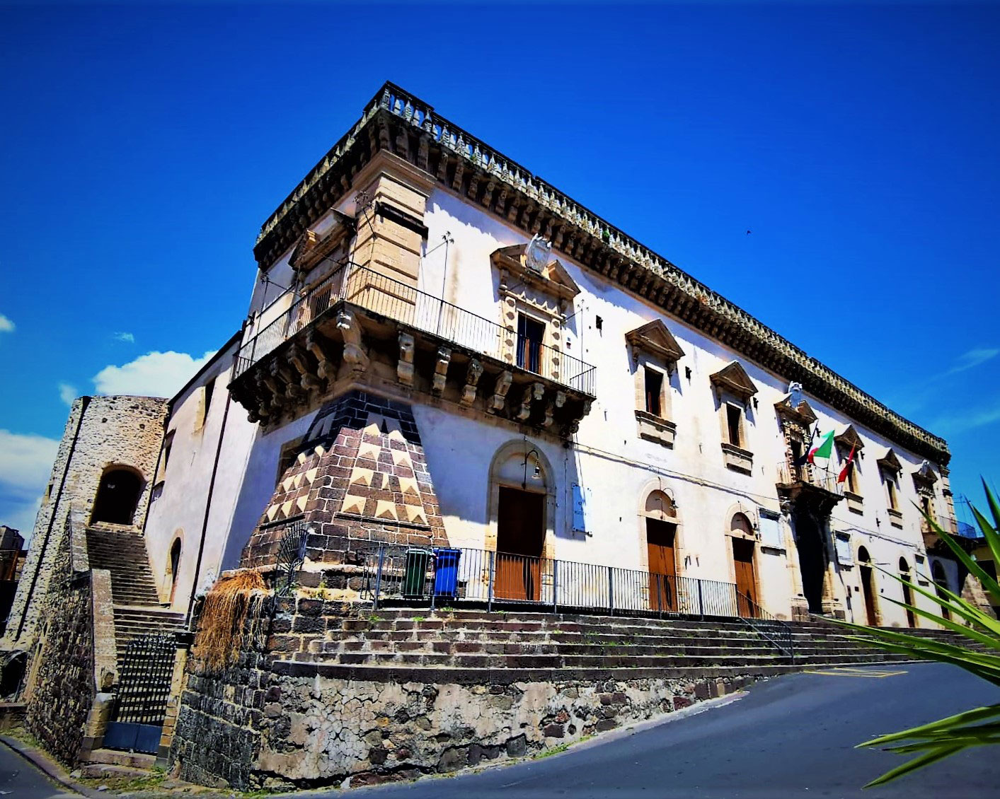
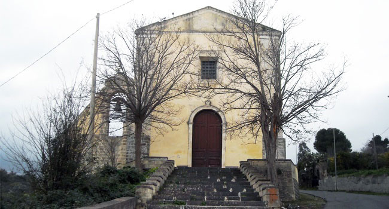

Francofonte
è arroccata lungo il versante di una collina che domina la Piana di Catania.
Le sue origini risalgono alla città di Hydra fondata nel II a.C. dai Greci L’attuale centro urbano si è sviluppato intorno al castello edificato dai Francofonte nel XIV secolo.
Chiamata così per le varie fonti d’acqua presenti nel paese,Francofonte, è conosciuta inoltre anche per essere la patria del tarocco.
La fontana Giardinello, nota anche come Settefontane, è posta all’ingresso Nord di Francofonte,
testimonia la ricchezza di fonti di cui era dotato il paese, che ancora oggi lo rende
un eccellente centro agricolo, in particolare con la produzione delle arance.
La fontana Giardinello
Palazzo Gravina
Oggi sede del municipio.
Fu edificato per volere di Don Ignazio Sebastiano Gravina nel 1705.
Presenta elementi rinascimentali e barocchi, fu un palazzo raso al suolo che ad oggi conserva solo i ruderi delle due torri che componevano la grande muraglia.
La facciata è suddivisa in due ordini, al primo ordine si trova il portone principale delimitato da pilastri sovrapposti con un arco a tutto sesto affiancato da una serie di tre porte per lato sormontate da una lunetta.

Il nome Canali è riferibile al fatto che in origine l’acqua, sgorgante dalla roccia, venisse convogliata, per un più facile utilizzo, con delle tegole o canali. La sorgente, ubicata ai piedi della collina “Ritturi”, sul margine sinistro del Torrente Canali, fu sistemata e ricoperta con una fontana in muratura, probabilmente nel sec. XVI., era anche denominata “Fontana Grande”.
L’attuale ponte risale al 1938, L’antico ponte doveva risalire, stando almeno alle caratteristiche osservabili in una foto d’epoca, al sec. XVIII o ai primi del XIX. L’intera struttura è realizzata in pietra lavica.
Fonte e Lavatoio canali
Chiesa dell'dell’Annunziata
La chiesa dell’Annunziata “Extra Terra” nelle forme attuali risale al 1695 ed ingloba parti cinquecentesche; ha subito notevoli rimaneggiamenti nel sec. XX.
La facciata è caratterizzata da un semplicissimo portale con arco a tutto sesto, sulla cui chiave è incisa la data 1695, riferibile all’anno di ricostruzione dopo il terremoto.

Cultura
Conoscenza e origini
Tradizioni
Radici, essenze
Festa della
Madonna della Neve
La patrona della città è La Madonna della Neve , che si celebra il 5 agosto. La leggenda risale alla metà del cinquecento e ci narra la vicenda di una disputa tra due cacciatori, uno di Francofonte e uno di Vizzini, che durante una battuta di caccia con i propri levrieri,trovarono la punta di una falce insanguinata e tra i rovi un quadro raffigurante la Madonna con un sopracciglio sanguinante.
Da qui nacque la credenza che la santa raffigurata fosse in “carne ed ossa”.
Così iniziarono i dibattiti su chi dei due cacciatori dovessero tenere il quadro, la scelta non fu facile e si affidarono al caso, disponendo la reliquia su un carretto trainato dai buoi, su una strada dove vi erano sia Francofonte che Vizzini e i buoi proseguirono per Francofonte.
Una volta giunta davanti ad una chiesa del paese, fosse estate, iniziò a nevicare, da qui Madonna della Neve o come al tempo esclamarono voddiri ca si voli chiamari a bedda matri ra nivi.
Nel mese di Marzo a Francofonte si svolge la sagra dell’arancia rossa.
Si narra che proprio in questo paese nella seconda metà dell’Ottocento,
sia nata la varietà del tarocco dal colore rosso rubino, oggi simbolo delle arance rosse siciliane.
Divenendo peculiare e famosa in tutto il mondo per i suoi colori e gusto inconfondibili e le proprietà salutari.